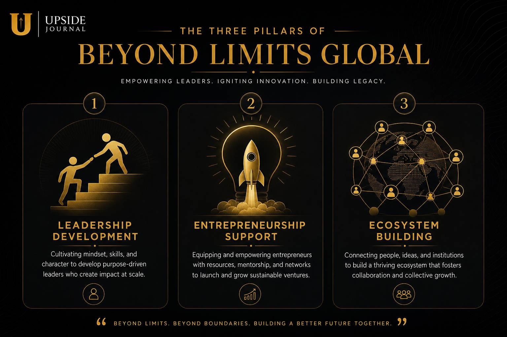

When the organisers of Cannes Lions 2026 needed someone to judge the world's most innovative creative technology, they chose a woman who spent twelve years building Google's business across West Africa, then walked away to build something of her own.
Dr. Juliet Ehimuan — founder and CEO of Beyond Limits Global, former Director of Google West Africa, Non-Executive Director at Zenith Bank, and author of 30 Days of Excellence — will serve on the Innovation Awarding Jury at this year's Cannes Lions International Festival of Creativity. She will sit alongside chief creative officers and technology leaders from Dentsu, Code and Theory, VML, and Havas, evaluating ideas that redefine the intersection of technology and creativity.
It is, by any measure, the most prestigious innovation jury in the global creative industry. And for the first time, Nigeria has a voice in the room.
The Career: Shell, Microsoft, Google
Ehimuan's professional biography reads like a roadmap of the organisations that shaped the modern technology landscape — and she was in the room for each chapter.
Born in Nigeria, she earned a first-class B.Eng. in Computer Engineering from Obafemi Awolowo University, followed by a postgraduate degree in Computer Science from the University of Cambridge, an MBA from London Business School, and a Doctor of Business Administration from Walden University. The academic credentials alone would fill most people's careers.
Instead, they were the foundation.
She began at Shell Petroleum Development Company in 1995 as a Performance Monitoring and Quality Assurance Supervisor. By 1997, she had moved to Microsoft UK, where she served as Programme Manager overseeing projects for MSN subsidiaries across Europe, the Middle East, and Africa, and later as Business Process Manager for MSN International.
After leaving Microsoft in 2005, Ehimuan founded Strategic Insight Consulting and later became General Manager of Chams Plc's Strategic Business Units — positions that deepened her understanding of technology's intersection with business strategy in African markets.
Then came the role that would define a decade.
Twelve Years at Google

In April 2011, Juliet Ehimuan was appointed Google's Country Manager for Nigeria. She rose to Director for West Africa in 2017 and held the position until June 2023 — a twelve-year tenure during which she led Google's operations, partnerships, and market development across one of the world's most dynamic and complex technology regions.
The West Africa that Google entered in 2011 and the one Ehimuan left in 2023 are fundamentally different ecosystems. During her tenure, Nigeria's internet penetration surged from roughly 28% to over 55%. The country's startup ecosystem grew from a handful of early ventures to a multi-billion-dollar industry. And Google itself expanded its West African footprint significantly, launching local products, developer programmes, and business tools tailored to the region's unique needs.
Ehimuan didn't just observe these changes. She architected many of them from the inside.
Her work earned recognition that few African technology executives have achieved. Forbes named her one of the top 20 power women in Africa. London Business School listed her among 30 people changing the world. She was featured in the BBC's Africa Power Women series and on CNN's Innovate Africa. The Most Influential People of African Descent (MIPAD) initiative included her in its global rankings.
Beyond Limits: What Comes After Google
When Ehimuan left Google in 2023, the question wasn't whether she would do something significant next — it was what.
The answer was Beyond Limits Global, a company designed to do what Ehimuan had spent three decades learning: drive digital innovation, develop leadership capacity, and grow technology ecosystems.
Beyond Limits operates at the intersection of several critical functions:
• Tech ecosystem development: Working with governments, corporates, and development organisations to build the infrastructure that supports startup growth
• Leadership transformation: Executive coaching and organisational development for companies navigating digital change
• Entrepreneurship programmes: The Beyond Limits Fellowship for Founders, run in partnership with the U.S. Consulate General in Lagos, has trained multiple cohorts of early-stage Nigerian startups — 30 companies per cohort — in a 12-week intensive programme covering everything from product-market fit to fundraising strategy
The Fellowship alone represents a pipeline of 60+ Nigerian founders per year receiving structured mentorship and resources — a multiplier effect that extends Ehimuan's impact far beyond what any single role at a multinational could achieve.
In 2023, she was also appointed Non-Executive Director at Zenith Bank, one of Nigeria's largest financial institutions, adding governance experience at one of Africa's most important banks to an already formidable portfolio.
Why the Innovation Jury Matters
The Cannes Lions Innovation category doesn't judge advertising. It judges technology that changes how people interact with the world — products, platforms, and systems that sit at the frontier of what's possible.
Previous Innovation Lions have gone to projects involving AI-powered medical diagnostics, accessibility technology, blockchain-based transparency systems, and computational creativity tools. The jury doesn't just evaluate whether something is technically impressive — it evaluates whether it matters.
Ehimuan's appointment to this jury is significant for three reasons:
1. Perspective from the frontline of emerging markets: Most innovation juries at global festivals are dominated by voices from New York, London, Tokyo, and São Paulo. Ehimuan brings the perspective of someone who has spent decades working in markets where innovation isn't optional — it's survival.
2. The bridge between technology and impact: Ehimuan's career spans corporate technology (Google, Microsoft), entrepreneurship (Beyond Limits), financial governance (Zenith Bank), and leadership development. She understands innovation not just as technical achievement but as a tool for systemic change.
3. Nigeria's first seat at this table: While Nigerian creatives have won at Cannes Lions in advertising and design categories, having a Nigerian technology leader on the Innovation Awarding Jury establishes a precedent. It signals that the festival recognises Africa not just as a market for creative campaigns, but as a source of the technology and innovation that drives them.
On her appointment, Ehimuan was characteristically direct: “Innovation is a fundamental driver of progress and a core pillar upon which I have built my career over the last three decades.”
The Bigger Picture
Dr. Juliet Ehimuan's journey from a computer engineering degree in Ile-Ife to the Innovation Jury at Cannes Lions is a thirty-year arc that traces the evolution of African technology itself — from a peripheral concern to a global force.
She didn't just witness that transformation. She led it from inside one of the world's most powerful technology companies, then left to ensure its benefits reached as many people as possible.
When she takes her seat on the Innovation Jury this June, she won't just be representing Nigeria. She'll be representing every founder in her Fellowship programme, every developer who built their first product during her tenure at Google, and every ecosystem she helped create.
The innovation she'll be judging at Cannes has been her life's work.
FAQ
Who is Dr. Juliet Ehimuan?
Dr. Juliet Ehimuan is a Nigerian business leader, technology executive, and founder of Beyond Limits Global. She served as Director of Google West Africa for twelve years (2011-2023) and is a Non-Executive Director at Zenith Bank.
What is Beyond Limits Global?
Beyond Limits Global is a company founded by Dr. Ehimuan that drives digital innovation, leadership transformation, and tech ecosystem development. It runs the Beyond Limits Fellowship for Founders, a 12-week programme for early-stage Nigerian startups, in partnership with the U.S. Consulate General in Lagos.
What is Dr. Ehimuan's role at Cannes Lions 2026?
She has been appointed to the Innovation Awarding Jury at Cannes Lions 2026, where she will evaluate entries in the Innovation category — one of the festival's most prestigious awards for technology that changes how people interact with the world.
What are Dr. Ehimuan's qualifications?
She holds a first-class B.Eng. in Computer Engineering (Obafemi Awolowo University), a postgraduate degree in Computer Science (University of Cambridge), an MBA (London Business School), and a Doctor of Business Administration (Walden University).
This article is part of Upside Journal's “Nigerian Tech at Cannes Lions 2026” series, profiling the startups and founders shaping Nigeria's technology landscape. Read more at theupsidejournal.com.